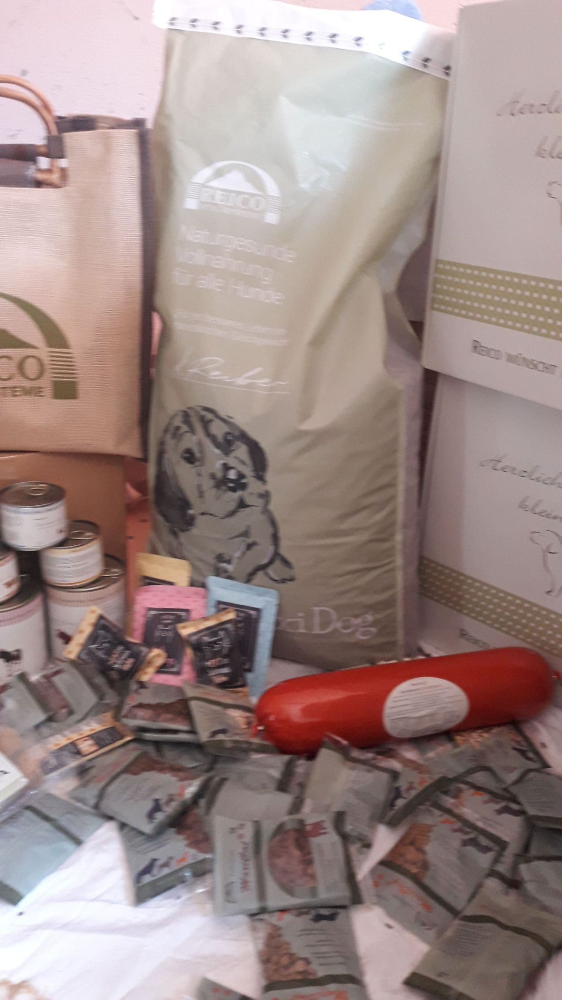
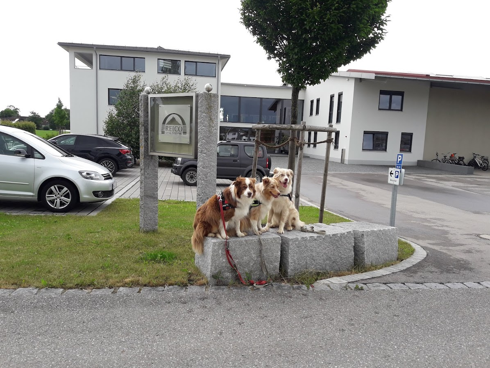

Ernährung ist nicht nur ein wichtige Thema für Menschen. Auch für Tiere gilt, dass gesundes Futter ein wichtiger Bestandteil eines schönen Lebens ist.
REICO ist ein Unternehmen, welches sich die gesunde Ernährung der häuslichen Lieblinge zu Aufgabe gemacht hat.
Lassen Sie sich über die Besonderheiten der tierischen Nahrungsmittel beraten und gönnen Sie Ihrem Vierbeiner etwas, das ihm gut tut.
7 Gründe für Reico
- Familienbetrieb aus dem Allgäu
- Artgerechte Tiernahrung, Nahrungsergänzung & Kräuter
- Hoher Fleischanteil und naturbelassene Rohstoffe, schonend zubereitet
- Nur bei Reico die einzigartige Algenmischung für das mineralische Gleichgewicht
- Über 30 Jahren; zehntausende zufriedene Kunden
- Praktischer Lieferservice mit Herz
- Kompetente Beratung durch Ihren Reico-Partner
Ernährungsberatung für Hunde:
Vereinbaren Sie einen Termin bei Ihnen zu Hause.

5 Bilder · Zum Vergrößern ein Bild auswählen.


